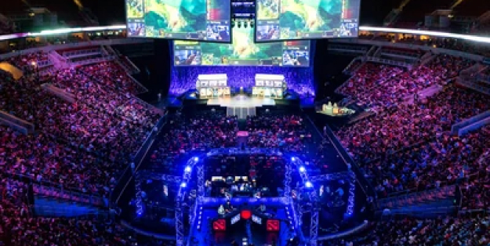

Dota 2, наравне со своей предшественницей DotA, также является киберспортивной дисциплиной. До официального выхода игры из бета-теста было проведено большое количество турниров. В 2011 году, когда Valve впервые представили игру на обозрение публики, началась эра самого крупного и уважаемого киберспортивного турнира — The International. Затем, в 2015 году, Valve объявили о турнирах «мейджорах».
Сейчас «Dota 2» — одна из крупнейших киберспортивных дисциплин, в которую вовлечены множество команд, организаций и просто фанатов. История «Defense of the Ancients» — это путь от простой пользовательской карты до всемирно известной киберспортивной дисциплины.
тупа я
А летом 2021 года термин «дед инсайд» (от англ. Dead inside — мёртвый внутри) превратился в определение типа людей, которые не интересуются в жизни ничем, кроме переживаний без весомого повода, грусти на пустом месте. Чаще всего под этим термином подразумевают пессимиста, который считает себя «мёртвым внутри». Кто такие деды Инсайды?
Shadowfiend
shadowraze
Coil, coil, coil бебра, прямо подо мною Каждый Raze наполнен болью Кричат души на Стокгольме Zxc и ты покойник В моём лобби ты не воин Не рычи, надень намордник Requiem, тебе плохо Coil, coil, coil бебра, прямо подо мною Каждый Raze наполнен болью Кричат души на Стокгольме Zxc и ты покойник В моём лобби ты не воин Не рычи, надень намордник Requiem, тебе плохо (Ха)